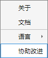
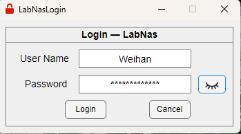
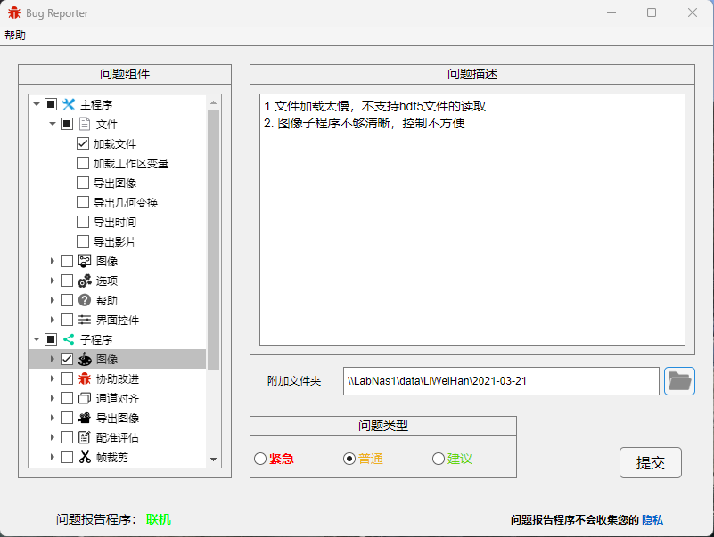

1.5.4 协助改进
当您遇到难以解决的程序问题时，请单击协助改进，该方案允许您提交bug并与维护人员取得联系。

使用协助改进的前提是，您正在Windows平台上工作，并且您具有LabNas1@silab账户，如需获取LabNas账户请与管理员联系。
协助改进首先弹出如下登录框并请求您的账户与密码，您的账户密码将通过sftp协议传递，这不会泄露给任何人。

您登陆成功后将出现报告程序主窗体，如下图所示

您可在左侧问题组件中勾选您认为具有问题的组件，并在右侧问题描述框中填写您的发现。
另外，对于数据处理过程中产生的问题，您可以提交附加文件夹路径，并在问题描述中指出出现问题的具体文件，这方便我们排查问题。
注1：当您的问题类型选择为普通或建议时，您的报告将提交至群晖中的一个隐藏文件夹供维护者参考。
当您的问题为紧急时，您可以在提交结束的对话框中选择是否向维护者发送一封电子邮件，您的报告将作为邮件的附件发送。